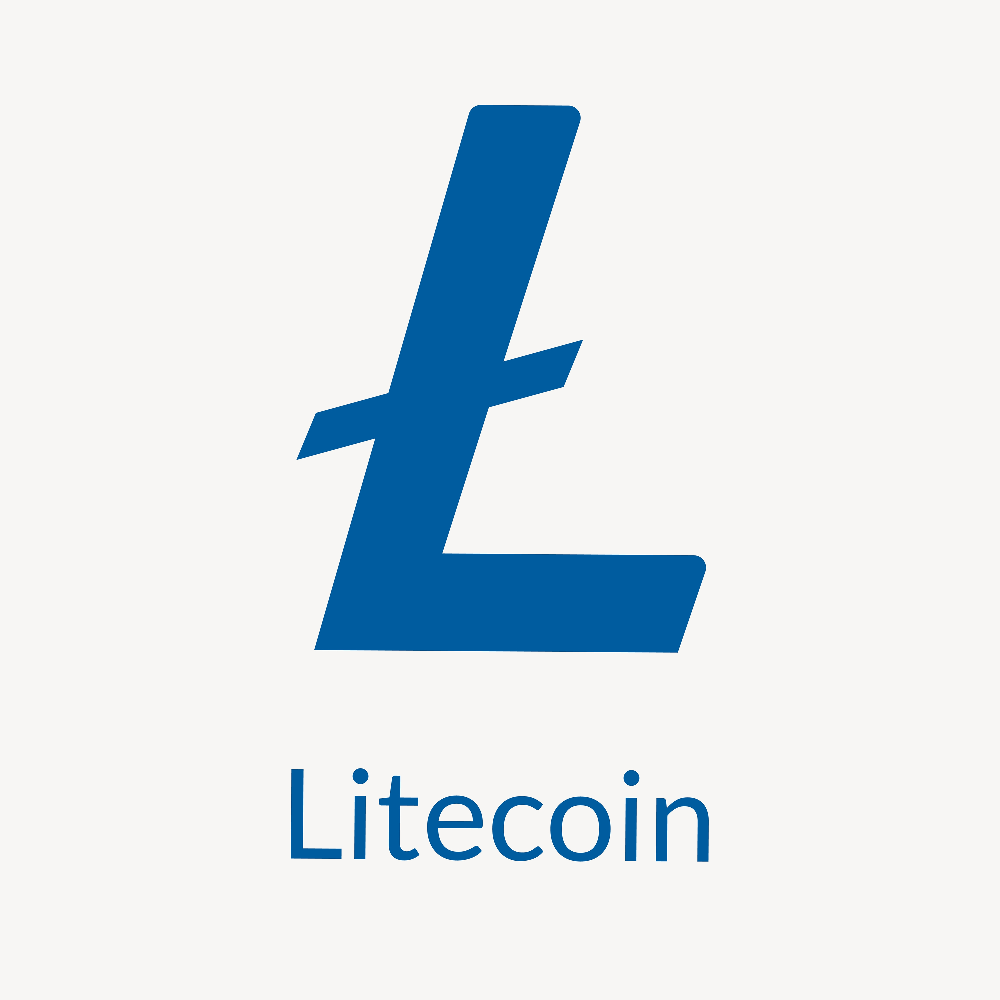
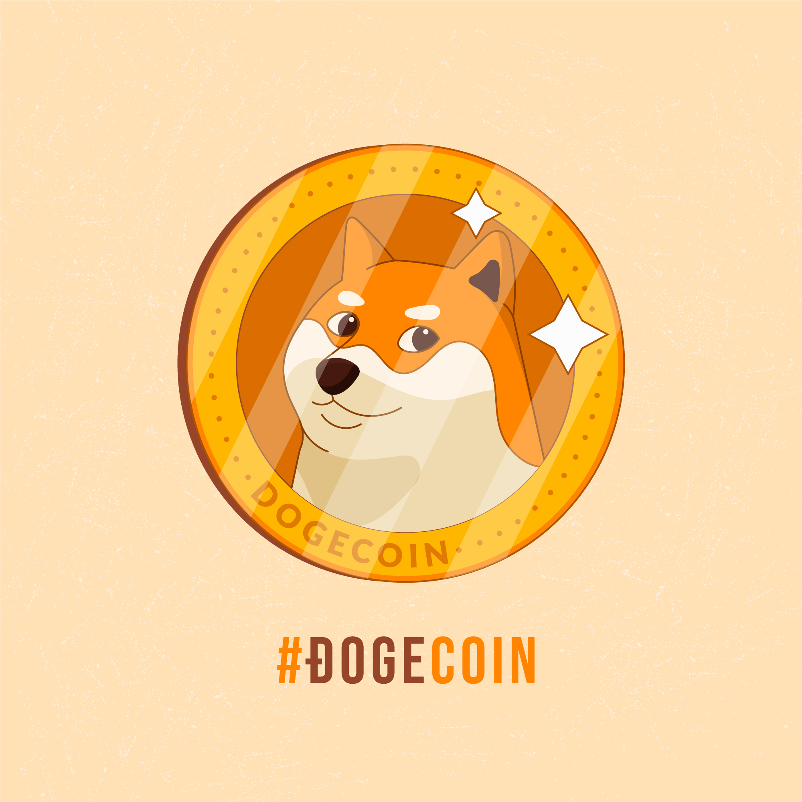

Bitcoin
Bitcoin to pierwsza i najbardziej znana kryptowaluta, stworzona przez osobę lub grupę osób znanych jako Satoshi Nakamoto w 2008 roku. Jest to cyfrowa forma pieniądza, która działa na zasadzie peer-to-peer, co oznacza, że transakcje są dokonywane bezpośrednio między użytkownikami, pomijając pośredników, takich jak banki czy instytucje finansowe.

Litecoin
Litecoin to kryptowaluta stworzona przez Charliego Lee w 2011 roku jako „srebrny” do „złotego” Bitcoina. Jest oparty na otwartym źródle kodu Bitcoin, ale różni się nieco pod względem technicznym. Litecoin ma krótszy czas blokowania, co oznacza, że transakcje są potwierdzane szybciej niż w przypadku Bitcoina. Jest powszechnie używany jako alternatywa dla Bitcoina w celu szybszych i tańszych transakcji.Dogecoin
Dogecoin to kryptowaluta stworzona na bazie popularnego mema internetowego „Doge” w 2013 roku przez programistów Billy'ego Markusa i Jacksona Palmera. Pomimo początkowych żartów, Dogecoin szybko stał się popularny w społeczności internetowej i został użyty do różnych celów. Jest jednym z najbardziej rozpoznawalnych altcoinów i ma aktywną społeczność entuzjastów.